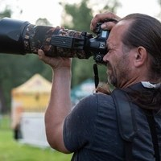

Jmenuji se Roman Brandl a v Pardubicích fotím svatby , rodiny s nejmenšími i ženské portréty . Nejraději fotím venku na místě, kde se cítíte dobře, a po domluvě přijedu i k vám domů.
(02) Co fotím
Focení, které má příběh
01
01 / 04
Svatební focení
Svatbu můžu fotit krátce, od příjezdu svatebčanů přes obřad a gratulace, nebo celý den od příprav nevěsty přes hostinu a krájení dortu až po první tanec. Vybrat si můžete ze čtyř balíčků, které mají od 2 do 12 hodin focení.
Ženský portrét, glamour nebo akt, když si chcete udělat chvíli jen pro sebe. Fotit můžeme venku, u vás doma nebo v ateliéru v Praze, po domluvě i s vizážistkou.
Oslavy, rodinná setkání, večírky a firemní, společenské i sportovní akce. Cenu za focení akcí určuji podle konkrétní akce, stačí mi napsat a připravím vám nabídku.
Nejdřív se spolu domluvíme online nebo po telefonu. Probereme, co si od focení slibujete a jaký balíček vám bude nejlépe vyhovovat.
2
Krok 2 z 4
Výběr místa
Fotit můžeme venku na místě, kde se cítíte dobře, u vás doma nebo v pronajatém ateliéru. Když je místo mimo Pardubice, účtuji dopravu 10 Kč za kilometr.
3
Krok 3 z 4
Focení
Podle balíčku fotíme od jedné do čtyř hodin, u svatby i celý den. Chci, aby to bylo v pohodě a bez stresu.
4
Krok 4 z 4
Výběr a předání
Z nafocených snímků si vyberete ty, které vám upravím a vyretušuji. Pošlu vám je v plném rozlišení přes DASTAX, kde si můžete objednat i tisk.
Z běžné fotky můžeme spolu vytvořit neobyčejné obrazy.
(05) Za objektivem
Ahoj, jsem Roman
Fotografie pro mě má různé polohy. Může zachytit realitu jako dokument a stejně tak může být výtvarným vyjádřením. Věřím, že spolu můžeme z běžné fotky udělat neobyčejné obrazy. Záleží jen na vás a vašich přáních.
Chci, aby pro vás focení se mnou byl malý zážitek. Ať si vyberete svatbu, rodinné focení, portrét, glamour nebo akt, uděláte si chvíli pro sebe a své nejbližší. Při focení nikam nespěchám, takže zbude čas i si popovídat.
Mým ateliérem je hlavně exteriér. Když chcete fotit doma, přijedu za vámi na pohodové lifestyle focení. Pokud se víc hodí ateliér, můžeme si ho pronajmout v Pardubicích nebo v Praze. Hotové fotky vám pošlu elektronicky přes DASTAX, kde si je stáhnete nebo si rovnou objednáte kvalitní tisk.
01Sídlím v Pardubicích
02Nejraději fotím venku
03Přijedu i k vám domů
04Ateliér v Pardubicích i Praze
05Fotím i sport a akce

Roman
Roman Brandl · Svatební, rodinný a portrétní fotograf
Domluvme si vaše focení✳Roman Brandl✳Domluvme si vaše focení✳Roman Brandl✳Domluvme si vaše focení✳Roman Brandl✳Domluvme si vaše focení✳Roman Brandl✳
Kolik stojí portrétní nebo rodinné focení?
Balíček Mini stojí 1 250 Kč a obsahuje hodinu focení a 5 upravených fotografií. Základní balíček stojí 2 000 Kč a zahrnuje dvě hodiny a 10 fotografií. Maxi stojí 3 700 Kč a zahrnuje 3 až 4 hodiny a 25 fotografií.
Kolik stojí svatební focení?
Svatební balíčky stojí od 5 000 Kč za 2 až 3 hodiny focení obřadu do 14 000 Kč za balíček Premium. Ten má 8 až 12 hodin focení a 160 až 250 fotografií a pokrývá celý den od příprav nevěsty po první tanec.
Můžu si nechat upravit víc fotek, než je v balíčku?
Ano. Každá další upravená fotografie stojí 200 Kč v balíčku Mini a 150 Kč v balíčku Základní. U Základního balíčku je po domluvě možná i vizážistka za 1 000 Kč.
Fotíte i oslavy a firemní akce?
Ano. Oslavy a rodinná setkání fotím v balíčku Společné chvíle, který zahrnuje 1 až 2 hodiny focení a 20 až 30 fotografií. Každá další hodina stojí 1 000 Kč. U večírků, firemních a sportovních akcí vám po domluvě připravím nabídku na míru.
(07) Kontakt
Domluvme si vaše focení
Napište pár vět o tom, co si představujete, a termín, který se vám hodí.